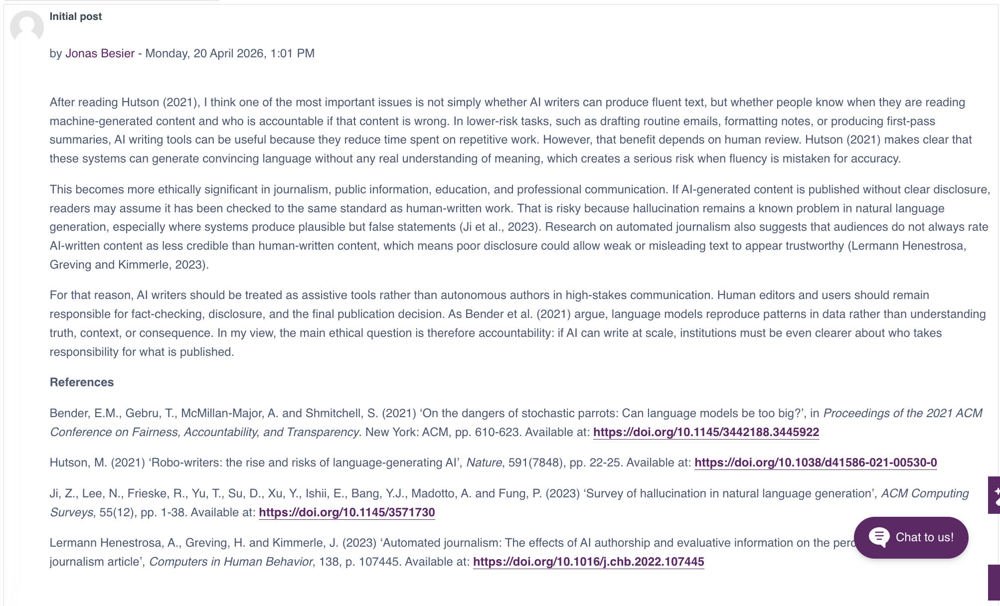
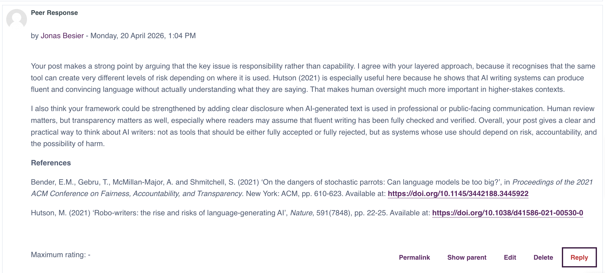
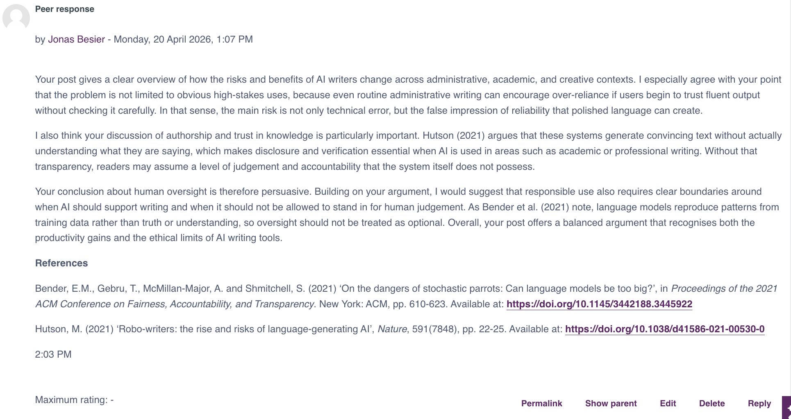
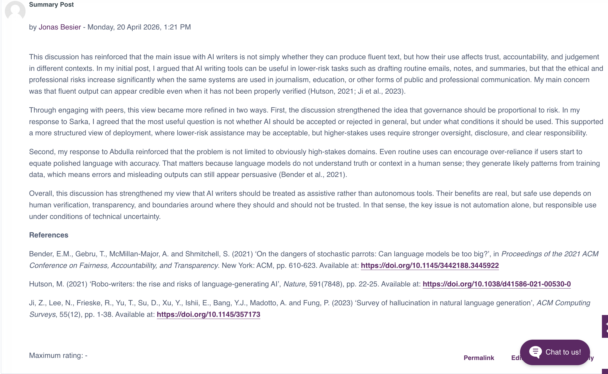

Sarka Pekarova
I agreed that responsibility matters more than capability, and added that disclosure should be explicit in public-facing use.
This collaborative discussion evaluated risks and benefits of AI writers after Hutson (2021).
My focus was transparency and accountability in machine-generated text.
I argued that fluency is not the same as reliability. AI writers can support low-risk drafting, but public, academic, and professional use needs disclosure, review, and clear responsibility.
Peer interaction focused my argument on governance, transparency, and acceptable AI use.
I agreed that responsibility matters more than capability, and added that disclosure should be explicit in public-facing use.
I agreed that even routine use can create risk if fluent output is trusted without verification.
The main takeaway was proportional governance: low-risk drafting may need light review, but public, academic, and professional uses require stronger oversight.




Supports LO3 through critical discussion of AI-writer risk.